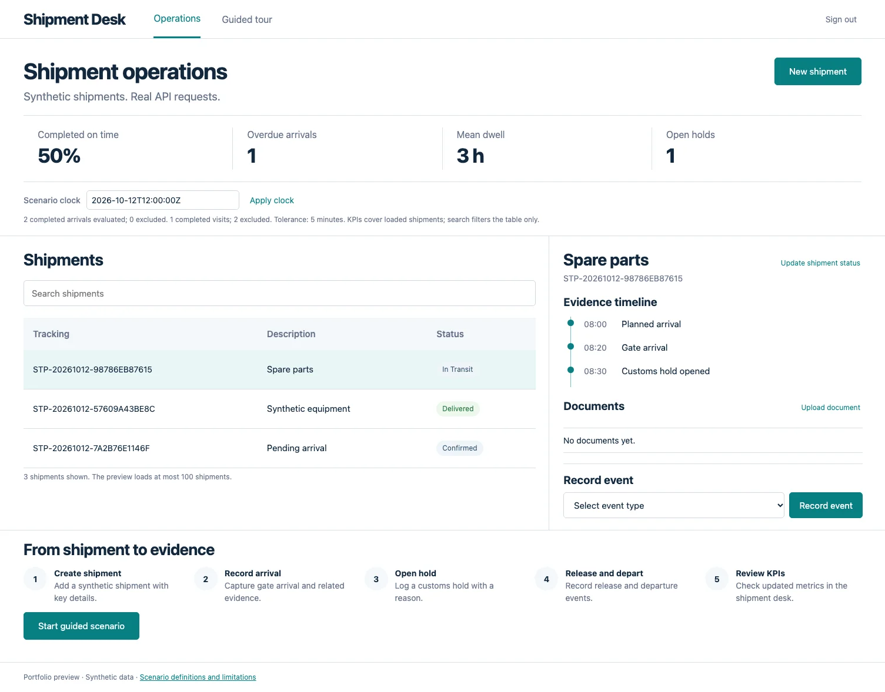
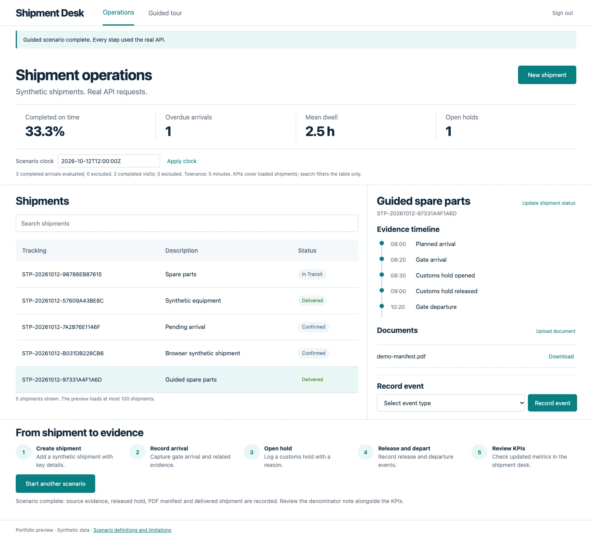
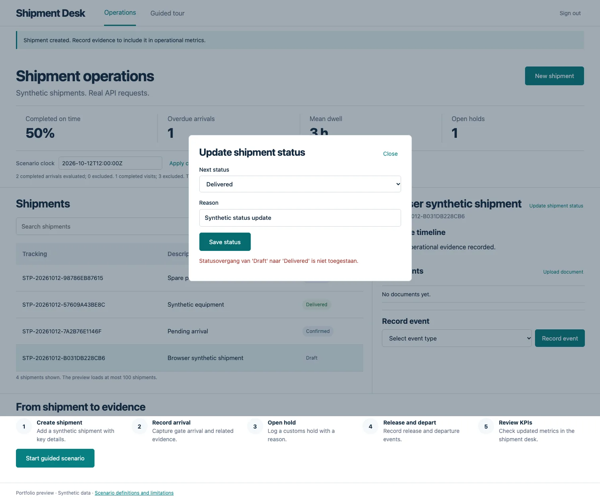
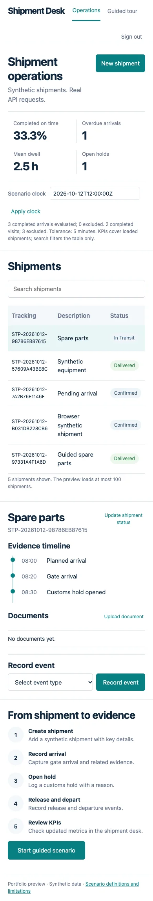

Every KPI on this desk points back to evidence.
Shipment Desk records plans, gate events, customs holds and documents through a real .NET API backed by SQL Server. The dashboard calculates punctuality and dwell at an explicit scenario clock, shows what it excluded, and keeps every customer's shipments isolated on the server.

Why it exists
Operations dashboards round off the awkward parts.
A shipment that never showed up quietly disappears from the on-time rate. A hold that is still open sits in an email. A retried request creates a duplicate shipment, and nobody can say which number on the screen came from which event.
Shipments, gate events, holds and documents are stored as evidence with observation times. KPIs are computed at a chosen clock with visible denominators. Retries replay safely with idempotency keys, and each customer only ever sees its own shipments.
Try it · runs in your browser
Step through the guided scenario
This replays the five-step scenario from docs/DEMO.md with the same baseline. The numbers come from the released Logistics KPI Utils file, the library Shipment Desk itself uses. Pick a step, then drag the clock back to 08:10 to see evidence that is not observed yet.
Browser-only replay: no API calls are made here. In the real app every step is an authenticated request that writes to SQL Server; the recorded video below shows that run.
How it works
A production-shaped API behind a small desk
Clean Architecture and CQRS
Domain, Application, Infrastructure and WebAPI projects. Commands and queries through MediatR, validation with FluentValidation.
Safe retries
Idempotency-Key on shipment creation replays the original response. The same event ID with changed evidence is rejected as a conflict.
Customer isolation
Customer boundaries are owned by the server and the JWT, never by a query parameter. Caches and replays are scoped per customer.
Reliable side effects
A transactional outbox publishes to Service Bus with retry metadata and dead-lettering. Documents go to Blob Storage with signature checks on upload.
The flow, step by step
Screens
What it looks like
Captured from the released 0.2.0 image with synthetic data. The video shows the guided scenario end to end.



Evidence
What is real, and what is not
REAL Built and verified
- ASP.NET Core 10 API with JWT, roles, SQL Server, soft deletes and global error responses
- Idempotency, outbox publisher, Redis cache invalidation, health and readiness endpoints
- Docker Compose stack and a released image with a start script that generates local secrets
- Verification evidence for API, browser and cold start in
docs/assets/*-proof.json
SIMULATED Mocked or not built yet
- All shipments, customers and documents are synthetic
- Azure resources are described in Bicep; this is not a running production deployment
- The published image is linux/amd64; Apple Silicon needs Docker emulation for SQL Server
- No physical cargo release or customs system is involved
Run it yourself
Run it locally
The helper creates a private .env with generated SQL, dispatcher and JWT secrets, then starts the released image. No registry login or cloud account needed.
# Docker Desktop running, then from a clone:
git clone https://github.com/phlppgdfry/shipment-tracking-platform
cd shipment-tracking-platform
python3 scripts/start-demo.py
# open http://localhost:5001 and follow the printed sign-in steps